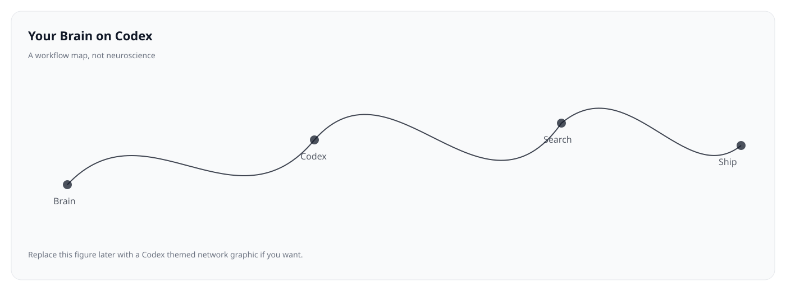

Overview
Motivation
Software development is constrained as much by cognition as by code. The limiting factors are often not language features or compute, but attention, working memory, interruption costs, and the friction of translating intent into reliable implementation.
Codex belongs to a class of tools that converts natural language intent into executable edits, with an interface oriented around tasks, diffs, and iterative refinement. This project page documents a workflow-level view of that shift: what changes when code production becomes partially delegated, and the developer’s role concentrates on specification, verification, and integration.
Conceptual model
We treat development as a loop with four recurring phases: intent formulation, implementation, evaluation, and revision. Historically, one person performs all four serially. Agentic tools introduce partial parallelism by allowing implementation steps to proceed while intent and evaluation remain active in the developer’s attention.
Three operating modes
Manual mode
The developer writes and revises code directly. This maximizes local control, but allocates a large fraction of attention to mechanics: scaffolding, wiring, rote transformations, and incremental debugging that competes with planning.
Search mode
The developer composes solutions from existing sources. This can accelerate learning and reduce error, but often produces fragmented context. Integration work becomes the dominant cost, and the resulting rationale may be implicit rather than explicit.
Codex mode
The developer expresses intent, constraints, and evaluation criteria; Codex drafts and iterates; the developer validates through review and tests. The center of gravity shifts from transcription to supervision. This does not remove responsibility; it reassigns where responsibility is exercised.

What changes in practice
1. Initiation costs decrease
Many projects stall at initiation: the first steps feel like friction, and friction triggers avoidance. When the initial draft can be produced from a compact description, starting becomes cheaper, and iteration becomes more frequent.
2. The bottleneck moves to verification
When code generation accelerates, the binding constraint becomes review quality. The developer’s effectiveness is increasingly determined by their ability to detect subtle regressions, to maintain invariants, and to formalize expectations into tests.
3. Specifications become first-class
Delegation rewards clarity. Over time, developers tend to write more explicit constraints and edge cases, because ambiguity produces drift. In this sense, Codex is a pressure toward externalized reasoning: what used to remain implicit must be stated.
Evaluation criteria
This project page focuses on workflow outcomes rather than claims about the brain. The most relevant indicators are operational.
- Time to first working version
- Number of context switches per feature
- Diff size and review burden
- Test pass rate across iterations
- Rate of regressions discovered post-merge
Failure modes
The same mechanisms that reduce friction can amplify error if verification is weak.
- Uninspected acceptance. Approving diffs without comprehension increases defect density.
- Spec drift. Long tasks without checkpoints can diverge from intent.
- Overgeneralization. Correct-looking code can be wrong under edge conditions.
- Debt acceleration. High throughput can accumulate architectural inconsistency.
Recommended operating procedure
- State intent precisely. Inputs, outputs, invariants, and failure cases.
- Request a plan. Validate the decomposition before implementation proceeds.
- Use checkpoints. Stop at stable milestones and reassess alignment.
- Review diffs structurally. Look for invariants, not just passing examples.
- Encode expectations. Tests serve as durable memory for both humans and tools.
FAQ
Is this primarily a productivity tool or a learning tool
Both. In the short term it reduces mechanical effort. Over time it can improve habits around specification and verification, if the developer treats review and testing as non-negotiable.
What determines whether Codex helps or harms
The rigor of evaluation. Delegation increases throughput; evaluation determines correctness.
What is a good first use case
Tasks with clear success criteria and low ambiguity, such as scaffolding, refactors with tests, migrations, and adding test coverage for existing behavior.